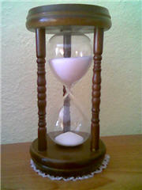

Tentaciones y perspectivas temporales: Phil Zimbardo en TED 2009
Hace algunas semanas les comentaba sobre niños y malvaviscos, un experimento que mostró una gran correlación entre el éxito y el autocontrol.
En esta ocasión retomamos el tema con una perspectiva más amplia: La forma en que vemos al tiempo afecta profundamente nuestras decisiones, y por lo tanto a nuestras vidas.
Perspectivas y decisiones
Si bien existe una realidad física y objetiva, los seres humanos vivimos la mayor parte del tiempo en un mundo de ideas, interpretaciones y percepciones que tienen múltiples orígenes.
Y con esta construcción de ideas, este modelo de la realidad, interpretamos todo lo que nos rodea con un nivel de seguridad que nos es muy natural, tan natural, que ni siquiera nos damos cuenta de que en lugar de ver las cosas «como son», por lo general las vemos como hemos aprendido a verlas.
Con todo lo anterior no me estoy refiriendo a datos científicos, teoremas matemáticos o a hechos verificables experimentalmente; me refiero a cómo nos relacionamos con otras personas, con nuestro entorno, con nosotros mismos; a cómo definimos nuestros objetivos y metas; al propósito y significado de lo que hacemos, lo que anhelamos, lo que queremos, lo que rechazamos y lo que somos.
Creo que mientras es posible llegar a un entendimiento del mundo, tal entendimiento no puede ser inmediato, gratuito o libre del esfuerzo constante, ya que lo que identificamos muchas veces como «realidad» es, simplemente, nuestra perspectiva.
La siguiente charla constituye una invitación a darnos cuenta de que tenemos una o varias perspectivas temporales, que tales perspectivas influyen en todas nuestras decisiones, y que, si queremos dirigir nuestras vidas nos corresponde adquirir dominio sobre ellas.
El ponente
Philip George Zimbardo es un psicólogo estadounidense y profesor emérito de la Universidad de Stanford. Es conocido como autor de obras introductorias a la psicología, pero sobre todo por el Experimento de la cárcel de Stanford, una investigación en 1971 que mostró cómo la conducta de individuos normales podía transformarse drásticamente debido a roles sociales.
El Dr. Zimbardo se ha dedicado a investigar científicamente las raíces de la compasión, el altruismo, el heroísmo y las relaciones pacíficas.
La siguiente charla fue presentada en febrero de 2009 en TED.
Una perspectiva saludable del tiempo
Como decides, vives.
*Descarga la charla en HQ (848 x 472): [Disponible en breve]
Traducción y subtítulos: Ajmme Kajros
En TED: Phil Zimbardo prescribes a healthy take on time
*Video subtitulado y distribuido bajo los términos de uso de TED Conferences LLC.
Metadatos y acciones
 Temas: desarrollo personal, educación, felicidad, filosofia, inspiracion, tedtalk, video ⋅
Para guardar: Enlace permanente a esta anotación.
Temas: desarrollo personal, educación, felicidad, filosofia, inspiracion, tedtalk, video ⋅
Para guardar: Enlace permanente a esta anotación.
 Print This Post
Print This Post
Comentarios
Los comentarios están cerrados.
Categorías
Últimas 4 anotaciones
Últimas anotaciones en cada categoría

Divulgación
El dinero no fomenta la creatividad: Daniel Pink en TEDGlobal 2009

Inspiración
Los 30 no son los nuevos 20

Noticias
Ver tu mente en tiempo real: Christopher deCharms en TED 2008
![Música en la era digital [Animación]](../../../wp-content/themes/tma/images/featured/animation_04_2009_featured.jpg)
Ocio
Música en la era digital [Animación]
julio 12, 2009, 9:02 pm
Información Bitacoras.com…
Valora en Bitacoras.com: Hace algunas semanas les comentaba sobre niños y malvaviscos, un experimento que mostró una gran correlación entre el éxito y el autocontrol. En esta ocasión retomamos el tema con una perspectiva más amplia: La forma …